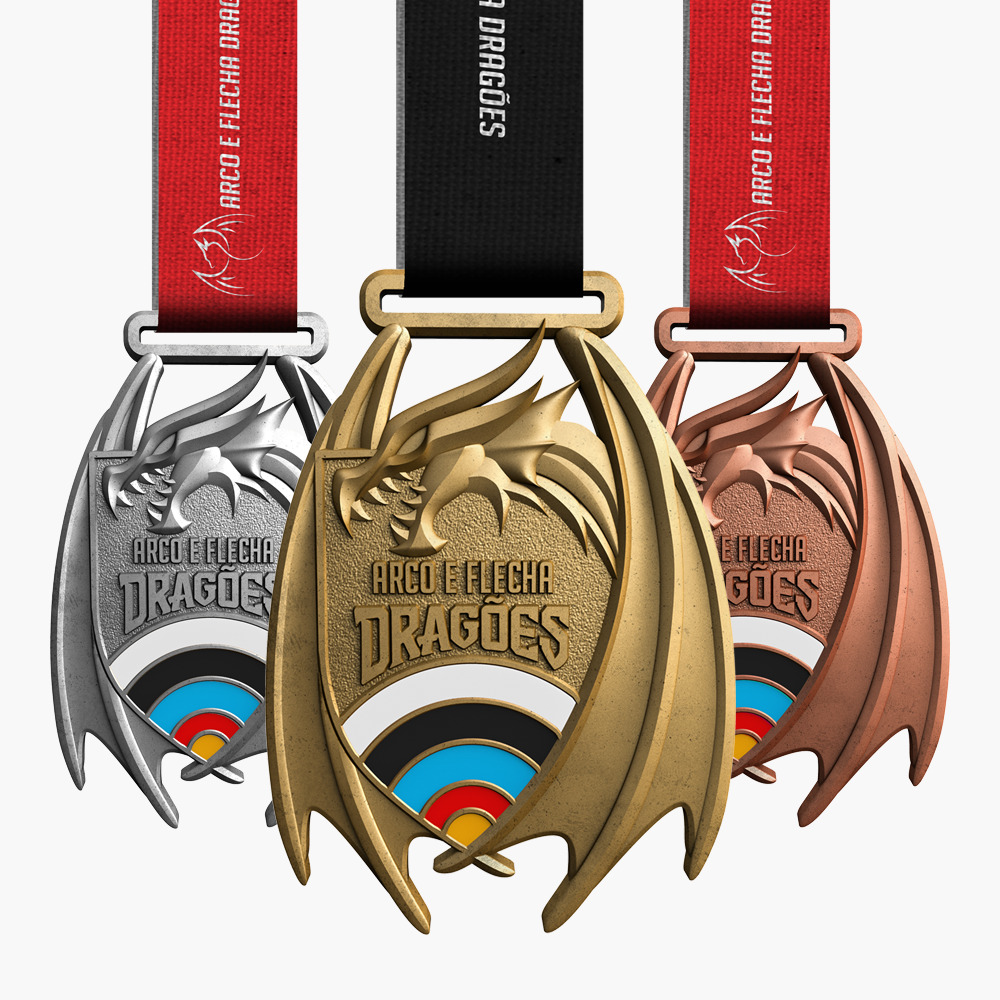
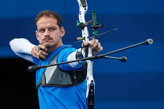

O que é o Arco e Flecha?
O arco e flecha é uma prática que envolve o uso de um arco para lançar flechas em direção a um alvo. É uma atividade que exige precisão, concentração e controle.
História
O arco e flecha surgiu há milhares de anos, sendo utilizado inicialmente para caça e guerra. Com o tempo, passou a ser praticado como esporte e também em torneios organizados.
Como funcionam os torneios
- Os competidores atiram flechas em um alvo circular
- O alvo possui pontuações diferentes em cada área
- Ganha quem fizer mais pontos ao final das rodadas
- As competições podem ser individuais ou em equipes
Tipos de arco
- Arco Recurvo: usado em competições olímpicas
- Arco Composto: mais moderno e tecnológico
- Arco Longo: tradicional, usado na Idade Média
Equipamentos
- Arco
- Flechas
- Aljava (suporte para flechas)
- Protetor de braço
- Luva ou dedeira
Principais competições
| Competição | Local |
|---|---|
| Jogos Olímpicos | Mundial |
| Campeonato Mundial | Internacional |
| Torneios Medievais | Europa |
Curiosidades
- O arco e flecha é esporte olímpico desde 1900
- Exige muita concentração e controle emocional
- Era muito usado por exércitos antigos
Galeria
Medalha Dos Campeonatos

Principais Atletas Do Arco e Flecha
Marcus Vinicius D'Almeida Do Brasil

Mathias Fullerton Da Dinamarca